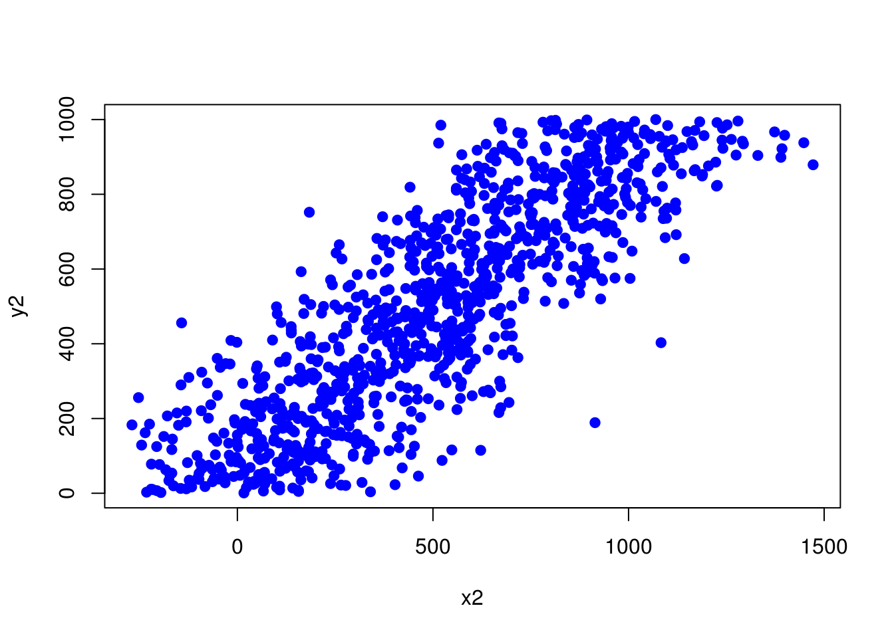
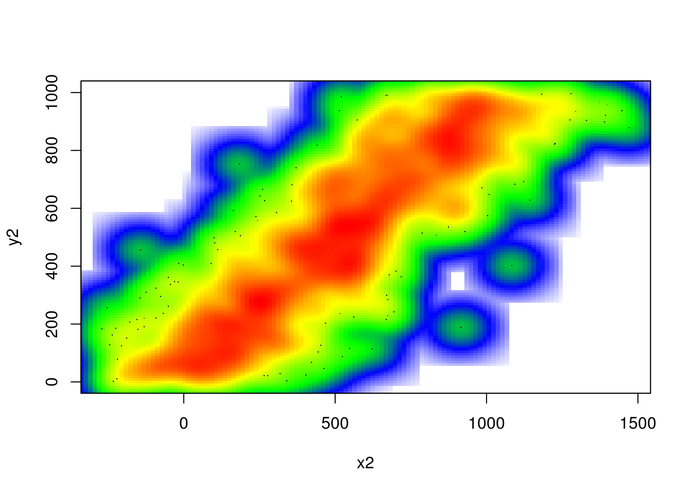

2.10 Exercises
2.10.1 Computations in R
Sum 2 and 3, use +
Take the square root of 36, use sqrt()
Take the log10 of 1000, use function
log10()Take the log2 of 32, use function
log2()Assign the sum of 2,3 and 4 to variable x
Find the absolute value of
5 - 145usingabs()functionCalculate the square root of 625, divide it by 5 and assign it to variable
x. Ex:y= log10(1000)/5, the previous statement takes log10 of 1000, divides it by 5 and assigns the value to variable yMultiply the value you get from previous exercise with 10000, assign it variable x Ex:
y=y*5, multiplies y with 5 and assigns the value to y.
KEY CONCEPT: results of computations or arbitrary values can be stored in variables we can re-use those variables later on and over-write them with new values
2.10.2 Data structures in R
Make a vector of 1,2,3,5 and 10 using
c(), assign it tovecvariable. Ex:vec1=c(1,3,4)makes a vector out of 1,3,4.Check the length of your vector with length(). Ex:
length(vec1)should return 3Make a vector of all numbers between 2 and 15. Ex:
vec=1:6makes a vector of numbers between 1 and 6, assigns to vec variableMake a vector of 4s repeated 10 times using
rep()function. Ex:rep(x=2,times=5)makes a vector of 2s repeated 5 timesMake a logical vector with TRUE, FALSE values of length 4, use
c(). Ex:c(TRUE,FALSE)Make a character vector of gene names PAX6,ZIC2,OCT4 and SOX2. Ex:
avec=c("a","b","c")a makes a character vector of a,b and cSubset the vector using
[]notation, get 5th and 6th elements. Ex:vec1[1]gets the first element.vec1[c(1,3)]gets 1st and 3rd elementsYou can also subset any vector using a logical vector in
[]. Run the following:
myvec=1:5
myvec[c(TRUE,TRUE,FALSE,FALSE,FALSE)] # the length of the logical vector should be equal to length(myvec)
myvec[c(TRUE,FALSE,FALSE,FALSE,TRUE)]==,>,<, >=, <=operators create logical vectors. See the results of the following operations:
myvec > 3
myvec == 4
myvec <= 2
myvec != 4Use
>operator inmyvec[ ]to get elements larger than 2 inmyvecwhic is described abovemake a 5x3 matrix (5 rows, 3 columns) using
matrix(). Ex: matrix(1:6,nrow=3,ncol=2) makes a 3x2 matrix using numbers between 1 and 6What happens when you use
byrow = TRUEin your matrix() as an additional argument? Ex:mat=matrix(1:6,nrow=3,ncol=2,byrow = TRUE)Extract first 3 columns and first 3 rows of your matrix using
[]notation.Extract last two rows of the matrix you created earlier.
Ex: mat[2:3,] or mat[c(2,3),] extracts 2nd and 3rd rows.
Extract the first two columns and run
class()on the result.Extract first column and run
class()on the result, compare with the above exercise.Make a data frame with 3 columns and 5 rows, make sure first column is sequence of numbers 1:5, and second column is a character vector.
Ex: df=data.frame(col1=1:3,col2=c("a","b","c"),col3=3:1) # 3x3 data frame.
Remember you need to make 3x5 data frame
- Extract first two columns and first two rows.
HINT: Same notation as matrices
- Extract last two rows of the data frame you made.
HINT: Same notation as matrices
Extract last two columns using column names of the data frame you made.
Extract second column using column names. You can use
[]or$as in lists, use both in two different answers.Extract rows where 1st column is larger than 3. HINT: you can get a logical vector using
>operator ,logical vectors can be used in[]when subsetting.Extract rows where 1st column is larger than or equal to 3.
Convert data frame to the matrix. HINT: use
as.matrix().
Observe what happens to numeric values in the data frame.
- Make a list using
list()function, your list should have 4 elements the one below has 2.
Ex: mylist= list(a=c(1,2,3),b=c("apple,"orange"))
- Select the 1st element of the list you made using
$notation.
Ex: mylist$a selects first element named “a”
Select the 4th element of the list you made earlier using
$notation.Select the 1st element of your list using
[ ]notation.
Ex: mylist[1] selects first element named “a”, you get a list with one element.
Ex: mylist["a"] selects first element named “a”, you get a list with one element.
Make a factor using factor(), with 5 elements. Ex:
fa=factor(c("a","a","b"))Convert a character vector to factor using
as.factor(). First, make a character vector usingc()then useas.factor().Convert the factor you made above to character using
as.character().
2.10.3 Reading in and writing data out in R
Read CpG island (CpGi) data from the compGenomRData package
CpGi.table.hg18.txt, this is a tab-separated file, store it in a variable called “cpgi”. UsecpgtFilePath=system.file("extdata", "CpGi.table.hg18.txt", package="compGenomRData")to get the file path within the installedcompGenomRDatapackage.Use
head()on CpGi to see first few rows.Why doesn’t the following work? see ‘sep’ argument at
help(read.table).
cpgtFilePath=system.file("extdata",
"CpGi.table.hg18.txt",
package="compGenomRData")
cpgtFilePath## [1] "/Users/aakalin/Rlibs/compGenomRData/extdata/CpGi.table.hg18.txt"cpgiSepComma=read.table(cpgtFilePath,header=TRUE,sep=",")
head(cpgiSepComma)## chrom.chromStart.chromEnd.name.length.cpgNum.gcNum.perCpg.perGc.obsExp
## 1 chr1\t18598\t19673\tCpG: 116\t1075\t116\t787\t21.6\t73.2\t0.83
## 2 chr1\t124987\t125426\tCpG: 30\t439\t30\t295\t13.7\t67.2\t0.64
## 3 chr1\t317653\t318092\tCpG: 29\t439\t29\t295\t13.2\t67.2\t0.62
## 4 chr1\t427014\t428027\tCpG: 84\t1013\t84\t734\t16.6\t72.5\t0.64
## 5 chr1\t439136\t440407\tCpG: 99\t1271\t99\t777\t15.6\t61.1\t0.84
## 6 chr1\t523082\t523977\tCpG: 94\t895\t94\t570\t21\t63.7\t1.04What happens when
stringsAsFactors=FALSE?cpgiHF=read.table("intro2R_data/data/CpGi.table.hg18.txt",header=FALSE,sep="\t", stringsAsFactors=FALSE)Read only first 10 rows of the CpGi table.
Use
cpgtFilePath=system.file("extdata","CpGi.table.hg18.txt",package="compGenomRData")to get the file path, then useread.table()with argumentheader=FALSE. Usehead()to see the results.Write CpG islands to a text file called “my.cpgi.file.txt”. Write the file to your home folder, you can use
file="~/my.cpgi.file.txt"in linux.~/denotes home folder.Same as above but this time make sure use
quote=FALSE,sep="\t"androw.names=FALSEarguments. Save the file to “my.cpgi.file2.txt” and compare it with “my.cpgi.file.txt”Write out the first 10 rows of ‘cpgi’ data frame. HINT: use subsetting for data frames we learned before.
Write the first 3 columns of ‘cpgi’ data frame.
Write CpG islands only on chr1. HINT: use subsetting with
[], feed a logical vector using==operator.Read two other data sets “rn4.refseq.bed” and “rn4.refseq2name.txt” with
header=FALSE, assign them to df1 and df2 respectively. They are again included in the compGenomRData package, and you can usesystem.file()function to get the file paths.Use
head()to see what is inside of the the data frames above.Merge data sets using
merge()and assign the results to variable named ‘new.df’, and usehead()to see the results.
2.10.4 Plotting in R
Please run the following for the rest of the exercises.
set.seed(1001)
x1=1:100+rnorm(100,mean=0,sd=15)
y1=1:100Make a scatter plot using
x1andy1vectors generated above.Use
mainargument to give a title toplot()as inplot(x,y,main="title")Use
xlabargument to set a label to x-axis.Useylabargument to set a label to y-axis.See what
mtext(side=3,text="hi there")does. HINT: mtext stands for margin text.See what
mtext(side=2,text="hi there")does.check your plot after execution.You can use
paste()as ‘text’ argument in mtext() try that, you need to re-plot. your plot first. HINT:mtext(side=3,text=paste(...))See whatpaste()is used for.
paste("Text","here")## [1] "Text here"myText=paste("Text","here")
myText## [1] "Text here"Use mtext() and paste() to put a margin text on the plot.
cor()calculates correlation between two vectors. Pearson correlation is a measure of the linear correlation (dependence) between two variables X and Y.
corxy=cor(x1,y1) # calculates pearson correlationTry use
mtext(),cor()andpaste()to display correlation coefficient on your scatterplot ?Change the colors of your plot using
colargument. Ex:plot(x,y,col="red")Use
pch=19as an argument in yourplot()command.Use
pch=18as an argument to yourplot()command.Make histogram of x1 with
hist()function.Histogram is a graphical representation of the data distribution.You can change colors with ‘col’, add labels with ‘xlab’, ‘ylab’, and add a ‘title’ with ‘main’ arguments. Try all these in a histogram.
Make boxplot of y1 with
boxplot().Make boxplots of
x1andy1vectors in the same plot.In boxplot use horizontal = TRUE argument
- make multiple plots with par(mfrow=c(2,1))
- run par(mfrow=c(2,1))
- make a boxplot
- make a histogram
Do the same as above but this time with par(mfrow=c(1,2))
Save your plot using “Export” button in Rstudio
Save your plot by running :
dev.copy(pdf,file="plot.file.pdf");dev.off()- Save your plot running :
dev.copy(png,filename="plot.file.png");dev.off()Another way to save the plot is the following
- Open a graphics device
- Create the plot
Close the graphics device
EXTRA: Making color density scatterplot. You can make a scatter plot showing density of points rather than points themselves. If you use points it looks like this:
x2=1:1000+rnorm(1000,mean=0,sd=200)
y2=1:1000
plot(x2,y2,pch=19,col="blue")
If you use smoothScatter() function, you get the densities.
smoothScatter(x2,y2,colramp=colorRampPalette(c("white","blue", "green","yellow","red"))) 
Now, plot with colramp=heat.colors argument and then use a custom color scale using the following argument.
colramp = colorRampPalette(c("white","blue", "green","yellow","red")))2.10.5 Functions and control structures (for, if/else etc.)
Read CpG island data as shown below for the rest of the exercises.
cpgtFilePath=system.file("extdata",
"CpGi.table.hg18.txt",
package="compGenomRData")
cpgi=read.table(cpgtFilePath,header=TRUE,sep="\t")
head(cpgi)## chrom chromStart chromEnd name length cpgNum
## 1 chr1 18598 19673 CpG: 116 1075 116
## 2 chr1 124987 125426 CpG: 30 439 30
## 3 chr1 317653 318092 CpG: 29 439 29
## 4 chr1 427014 428027 CpG: 84 1013 84
## 5 chr1 439136 440407 CpG: 99 1271 99
## 6 chr1 523082 523977 CpG: 94 895 94
## gcNum perCpg perGc obsExp
## 1 787 21.6 73.2 0.83
## 2 295 13.7 67.2 0.64
## 3 295 13.2 67.2 0.62
## 4 734 16.6 72.5 0.64
## 5 777 15.6 61.1 0.84
## 6 570 21.0 63.7 1.04Check values at perGc column using a histogram. ‘perGc’ stands for GC percent => percentage of C+G nucleotides
Make a boxplot for ‘perGc’ column
Use if/else structure to decide if given GC percent high, low or medium. If it is low, high, or medium. low < 60, high>75, medium is between 60 and 75 use greater or less than operators < or > . Fill in the values in the in code below, where it is written ‘YOU_FILL_IN’
GCper=65
# check if GC value is lower than 60,
# assign "low" to result
if('YOU_FILL_IN'){
result="low"
cat("low")
}
else if('YOU_FILL_IN'){ # check if GC value is higher than 75, assign "high" to result
result="high"
cat("high")
}else{ # if those two conditions fail then it must be "medium"
result="medium"
}
result- Write a function that takes a value of GC percent and decides if it is low, high, or medium. low < 60, high>75, medium is between 60 and 75. Fill in the values in the in code below, where it is written ‘YOU_FILL_IN’
GCclass<-function(my.gc){
YOU_FILL_IN
return(result)
}
GCclass(10) # should return "low"
GCclass(90) # should return "high"
GCclass(65) # should return "medium"- Use a for loop to get GC percentage classes for gcValues below. Use the function you wrote above.
gcValues=c(10,50,70,65,90)
for( i in YOU_FILL_IN){
YOU_FILL_IN
}- Use
lapplyto get to get GC percentage classes for gcValues. Example:
vec=c(1,2,4,5)
power2=function(x){ return(x^2) }
lapply(vec,power2)Use sapply to get values to get GC percentage classes for gcValues
Is there a way to decide on the GC percentage class of given vector of GCpercentages without using if/else structure and loops ? if so, how can you do it? HINT: subsetting using < and > operators